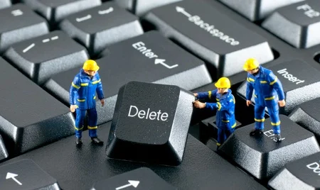

Servicio Tecnico
Somos una empresa que se dedica a reparación y servicio técnico de pc. Contamos con una amplia experiencia brindando nuestros servicios a empresas, como así también a pequeños comercios y particulares.
Servicios para PC´S y Notebooks:
- Instalación y configuración de componentes y periféricos.
- Eliminación de virus, troyanos, Spyware.
- Limpieza y mantenimiento de sistemas.
- Diagnóstico y detección de fallas.
- Asesoramiento técnico.
- Recuperación de los datos en disco rígido y otros medios de almacenamiento.
- Reparación de monitores e impresoras